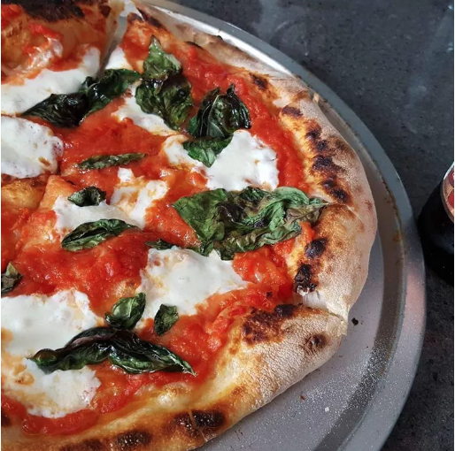

Pizza

Description:
To make a mouthwatering pizza, start by preparing the dough. In a mixing bowl, combine warm water, yeast, sugar, and let it sit for a few minutes until it becomes frothy. Gradually add flour, olive oil, and salt, kneading the mixture until it forms a smooth and elastic dough. Cover it with a damp cloth and allow it to rise in a warm place for about an hour. Meanwhile, prepare the pizza sauce by sautéing garlic and onions in olive oil, then adding crushed tomatoes, dried herbs, salt, and pepper. Simmer the sauce until it thickens and develops rich flavors. Once the dough has risen, punch it down and roll it out into a round shape. Spread the sauce over the dough, leaving a small border around the edges. Top the pizza with your favorite ingredients such as mozzarella cheese, pepperoni, bell peppers, mushrooms, and fresh basil. Bake the pizza in a preheated oven at a high temperature until the crust turns golden brown and the cheese melts and bubbles. Remove it from the oven, let it cool for a few minutes, then slice and savor the irresistible combination of flavors and textures in your homemade pizza masterpiece.
Ingredients:
- Cheese
- Pizza Dough
- Flour
- Tomato
- Mozzarella
Steps:
- Prepare the dough
- Prepare the pizza sauce
- Preheat the oven
- Shape the dough
- Add the toppings
- Bake the pizza
- Serve and enjoy!